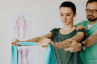

E aí, jogador? Vamos trocar uma ideia?
Fale com a gente e descubra o prazer de jogar bola sem sentir dor.

A primeira clínica de fisioterapia especializada em:
A vida real não é feita de torneio dos campeões ou copa desbravadores. A vida real é feita por você, que bate uma bolinha no fim de semana. E que, mesmo todo quebrado, encara uma segunda-feira. Nossa clínica é especializada em recuperar você para a próxima rodada. Porque sem você, o futebol de verdade não acontece.
1,286 Lesões de joelhos
562 Lesões no tornozelo
417 Lesões de coxa
Fazer atletas amadores pelo país baterem sua bolinha numa boa.
Os fundadores já foram jogadores antes de se tornarem médicos. Então acredite: eles sabem a frustração de ficar de fora de uma pelada.
Popularizar a prática do futebol com o mínimo de lesões possível.
Futebol é esporte de impacto. Não dá pra jogar sem estar preparado. Não precisa ser um atleta profissional para estar minimamente preparado.
Camila Dias
Ex-jogadora profissional, Fisioterapeuta
Alex “Canhota”
Ex-jogador profissional, Fisioterapeuta
Beto Oliveira
Ex-jogador profissional, Fisioterapeuta
Para boleiros de fim de semana que acabaram de se machucar. Aceitamos planos de saúde.
Temos um programa de treino preventivo desenvolvido para futebol society.
Quer jogar sem medo? Temos treinos para melhorar sua preparação.
Tá jogando mais vezes do que aguenta? Faça nossos testes e vá na boa.
Fale com a gente e descubra o prazer de jogar bola sem sentir dor.
Tel: (12) 3456-7890
clinicabemestar.com.br
Rua Alegre, 123,
Cidade Brasileira
Segunda a sexta
De 8:00 até 18:00